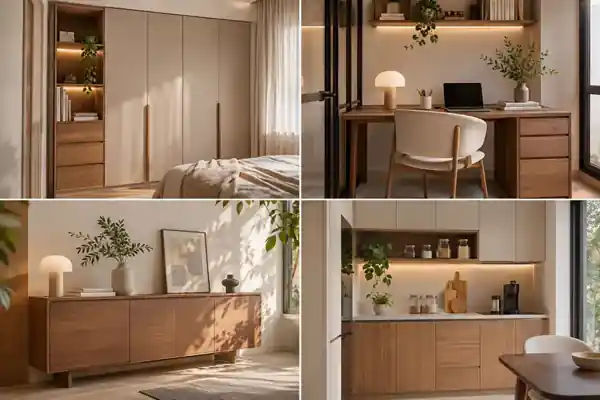

01 / STORAGE↗
01 / STORAGE↗Wardrobe & storage
Penyimpanan yang mengikuti dimensi, barang, dan rutinitas.
OBJECTS FOR THE WAY YOU LIVE
Kami memulai dari cara ruang digunakan—bukan dari katalog. Fungsi, proporsi, material, dan detail dibicarakan sebagai satu kesatuan.

01 / OUR POINT OF VIEW
Sebuah lemari perlu memahami kebiasaan menyimpan. Meja perlu memberi ruang untuk bekerja. Credenza perlu menjaga alur ruang tetap lega. Bentuk hadir setelah kebutuhan menjadi jelas.
Dimensi, cahaya, sirkulasi, dan batas yang sudah ada.
Barang yang disimpan, aktivitas, dan kebiasaan sehari-hari.
Material, hardware, sambungan, dan finishing.
02 / MADE FOR YOUR SPACE
Jelajahi titik awal yang paling dekat dengan ruangmu. Setiap kebutuhan akan dibahas berdasarkan ukuran dan konteks sebenarnya.
Seluruh visual interior pada halaman ini adalah gambar fotorealistis yang dihasilkan AI untuk konsep NARA Objects. Gambar bukan foto produk, proyek, atau dokumentasi pekerjaan nyata.
03 / THE PROCESS
Keputusan penting dibuat sebelum produksi dimulai. Setiap tahap membantu menyamakan kebutuhan, ekspektasi, dan detail pekerjaan.
Diskusikan kebutuhan, ukuran awal, kondisi ruang, dan prioritas.
Pastikan dimensi, akses, pilihan material, hardware, dan finishing.
Bahas desain, gambar kerja, spesifikasi, harga, dan jadwal.
Produksi dan pemasangan berjalan setelah detail disepakati.
04 / MATERIAL & CONSIDERATION
Material bukan sekadar tampilan. Pilihan papan atau kayu, hardware, finishing, dan kondisi lokasi memengaruhi karakter, perawatan, serta biaya pengerjaan.
Baca hal yang perlu diketahuiEXPLORE THE DETAILS
Lebar, tinggi, kedalaman, akses masuk, serta ruang gerak di sekitarnya menjadi titik awal perancangan.
Tidak ada kalkulator atau estimasi harga otomatis pada konsep ini. Penawaran membutuhkan detail proyek yang telah dibahas.
05 / PROJECT FIT
Skenario konsep ini berfokus pada Surabaya, Sidoarjo, dan Gresik. Kebutuhan di luar area tersebut memerlukan pembahasan dan persetujuan biaya tersendiri.
Renovasi struktural, pekerjaan sipil, listrik, dan plumbing tidak termasuk dalam lingkup konsep layanan ini.
Area layanan dan batas pekerjaan di atas adalah data skenario sintetis, bukan pernyataan operasional bisnis aktif.
06 / GOOD TO KNOW
Kejelasan di awal membuat proses perancangan lebih terarah.
Ukuran, material, hardware, finishing, kondisi lokasi, akses, dan kompleksitas pengerjaan memengaruhi penawaran. Harga final perlu dibahas berdasarkan detail proyek.
Jenis furnitur, ukuran perkiraan, foto ruang bila tersedia, kebutuhan penyimpanan, area, dan target waktu akan membantu percakapan awal.
Tidak. Dalam skenario konsep ini, renovasi struktural, pekerjaan sipil, listrik, dan plumbing berada di luar cakupan.
Produksi idealnya dimulai setelah desain, spesifikasi, gambar kerja, harga, dan jadwal disetujui bersama.
07 / START A CONVERSATION
Susun brief singkat untuk membantu memperjelas kebutuhan. Ini adalah demonstrasi interaktif lokal—tidak mengirim atau menyimpan data.